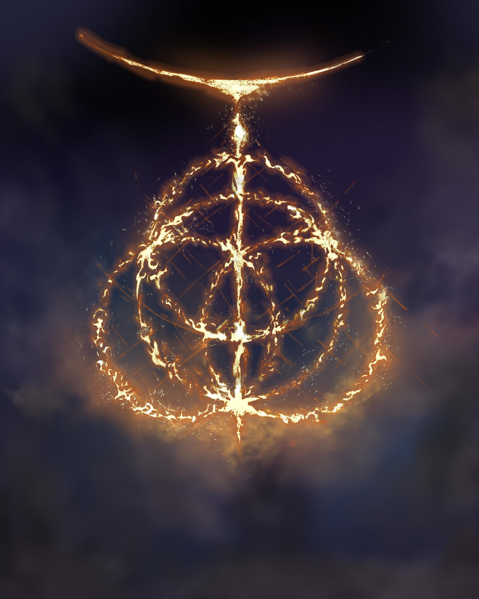
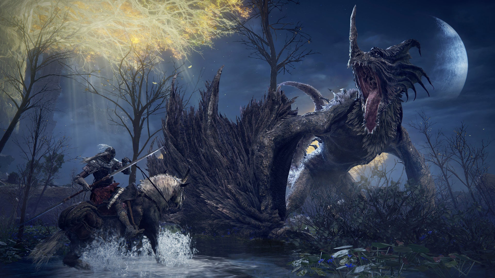
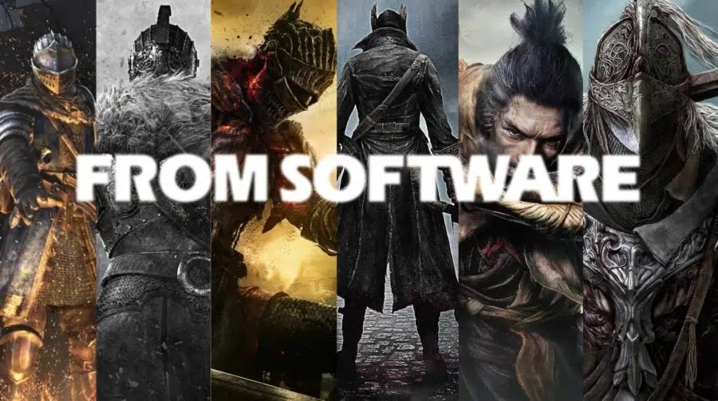

Bienvenue sur mon site dédié à Elden Ring, l'univers sombre et envoûtant né de la collaboration entre FromSoftware et George R. R. Martin. Ici, tu trouveras toutes les informations essentielles pour découvrir ce jeu culte : son histoire, ses mécaniques, ses boss iconiques et les créateurs visionnaires qui l'ont façonné.

Elden Ring est un jeu de rôle et d'action en monde ouvert développé par FromSoftware, connu pour ses univers sombres et exigeants. Le joueur y incarne un Sans-Éclat, un être déchu convoqué pour restaurer l'Elden Ring, source de l'équilibre dans l'Entre-Terre. Le jeu se distingue par ses vastes paysages à explorer librement, ses combats intenses, et son ambiance unique mêlant fantasy, mystère et tragédie. Chaque région possède sa propre identité visuelle, ses secrets et ses ennemis redoutables.
Grâce à sa liberté d'approche, à son scénario cryptique et à sa direction artistique époustouflante, Elden Ring est devenu l'une des œuvres les plus marquantes du jeu vidéo moderne.
 Les boss d'Elden Ring sont au cœur de son expérience : des adversaires puissants, spectaculaires et souvent terrifiants qui marquent chaque étape de l'aventure. On y retrouve des demi-dieux corrompus, des créatures mythiques et des guerriers légendaires, chacun doté d'un style de combat unique. Ces affrontements demandent stratégie, patience et adaptation, tant leur difficulté peut mettre à l'épreuve les joueurs les plus aguerris. Chaque boss raconte une part de l'histoire du monde, révélant les drames familiaux, les malédictions ou les ambitions démesurées qui ont façonné l'Entre-Terre. Affronter ces ennemis, c'est progresser dans le récit autant que dans la maîtrise du jeu.
 FromSoftware est un studio japonais fondé en 1986, reconnu aujourd'hui comme l'un des maîtres du jeu vidéo d'action exigeant grâce à des titres comme Dark Souls, Bloodborne ou Sekiro. Sous la direction créative de Hidetaka Miyazaki, le studio a développé une identité forte : univers sombres, narration implicite, combats techniques et atmosphères immersives. Pour Elden Ring, Miyazaki a collaboré avec l'écrivain George R. R. Martin afin de concevoir un monde riche en mythes et en légendes. La passion de FromSoftware pour les expériences profondes et mémorables se ressent dans chaque détail du jeu, faisant du studio une référence incontournable dans l'industrie vidéoludique.